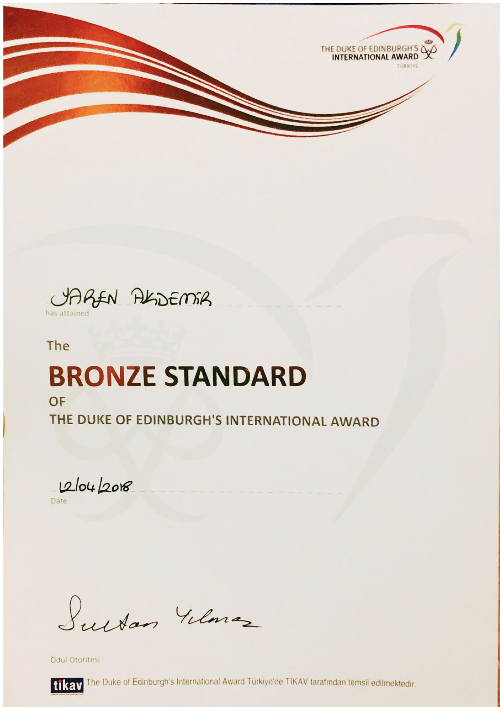

B.Sc. Computer Engineering
2020 — 2024Bahçeşehir University — Istanbul
- Programming, data structures and algorithms, databases, software engineering, networks, and web and mobile application development.
I am a Computer Engineering graduate from Bahçeşehir University, where I also completed a minor in Video Production. I work across code and image: building for the web, and directing, shooting and editing films.
I am currently deepening my front-end development skills through professional training and hands-on projects. My engineering background, together with experience in software testing and digital projects, has strengthened my analytical thinking and problem-solving.
Bahçeşehir University — Istanbul
Bahçeşehir University — Istanbul — GPA 4.00 / 4.00
Anadolu University — Open Education Faculty
Vakko — Istanbul
Egemsoft — Istanbul
Egemsoft — Istanbul
Vakko — Istanbul
MagicLab Game Technologies — Remote

Enstitü İstanbul İSMEK
June 2026 — 120 hours
A 120-hour online training programme in front-end web development, run by Enstitü İstanbul İSMEK (Istanbul Metropolitan Municipality). I worked through the fundamentals of building web interfaces — structuring pages, styling and layout, and adding interaction — and completed the programme successfully.

Google — Coursera
September 2024
The first course of the Google UX Design Certificate. I learned the core ideas behind user-centred design: what a UX designer does, how the design thinking process works, why accessibility and equity matter, and how design sprints are planned and run.

Google — Coursera
September 2024
The second course of the Google UX Design Certificate. I practised the first stages of a real design process: researching users and building empathy maps, personas, user stories and journey maps, writing problem statements, and generating ideas through competitive audits and quick sketching.

The Duke of Edinburgh’s International Award Türkiye
April 2018
I attained the Bronze Standard of the Duke of Edinburgh’s International Award. For the programme I played tennis as my physical activity, played the guitar as my artistic pursuit, and did community service by volunteering with Bakırköy Municipality.
British Council / IDP / Cambridge — CEFR level C1
Österreichisches Sprachdiplom Deutsch (ÖSD)